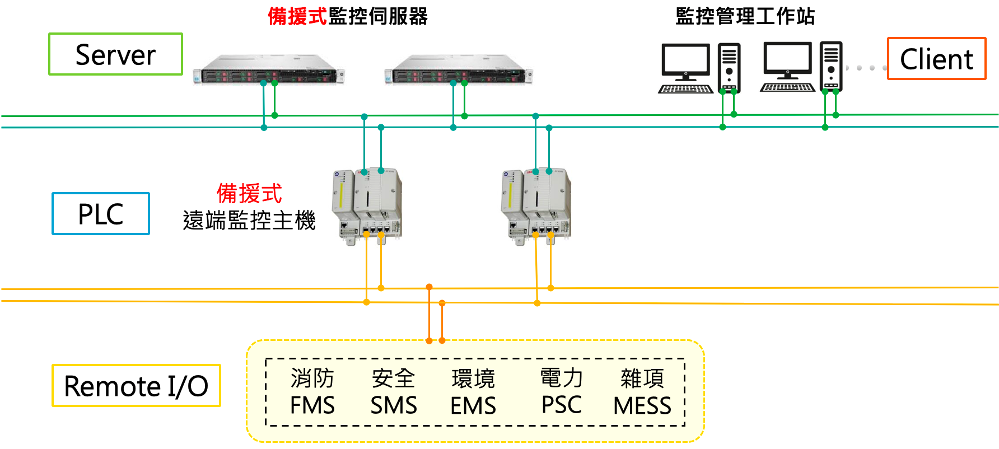
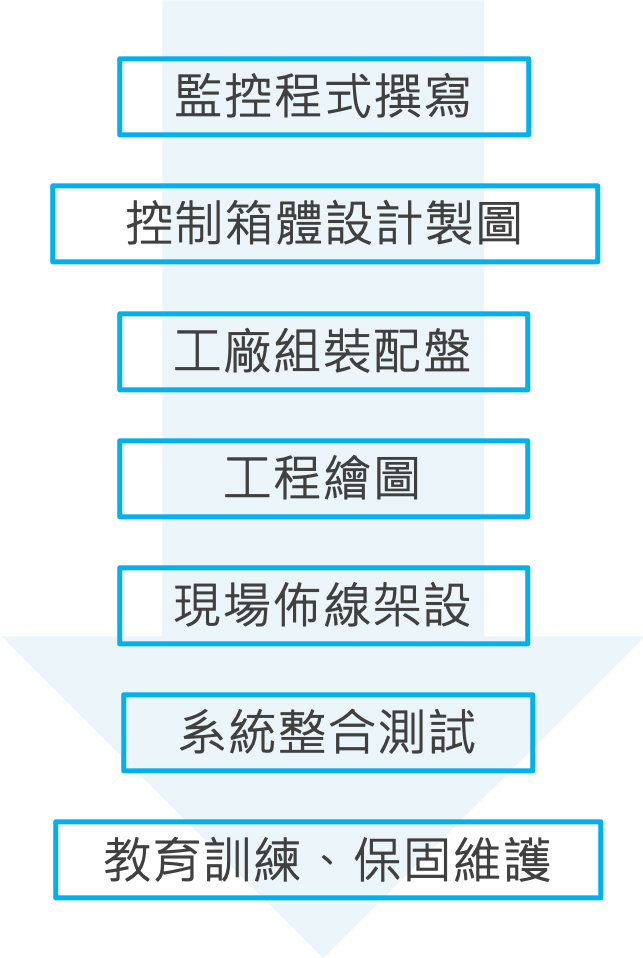
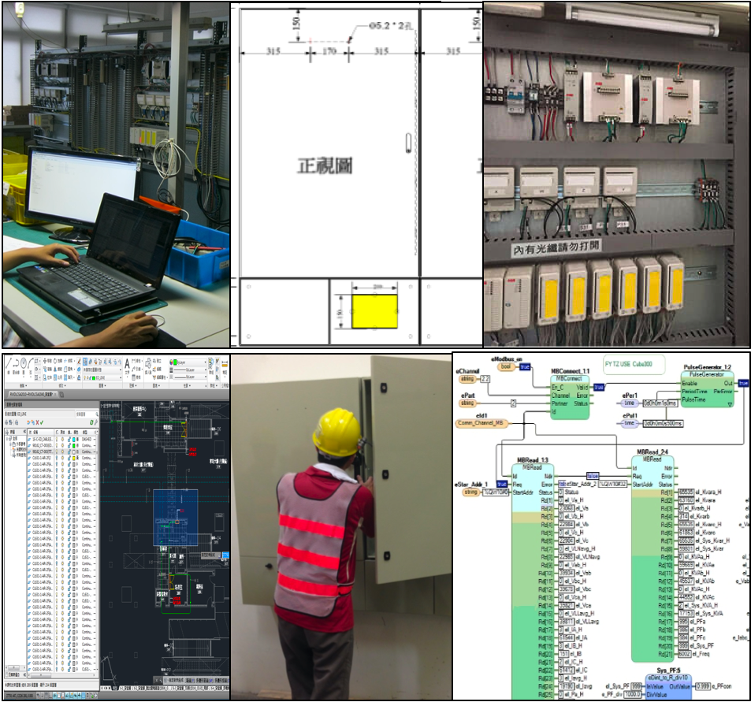
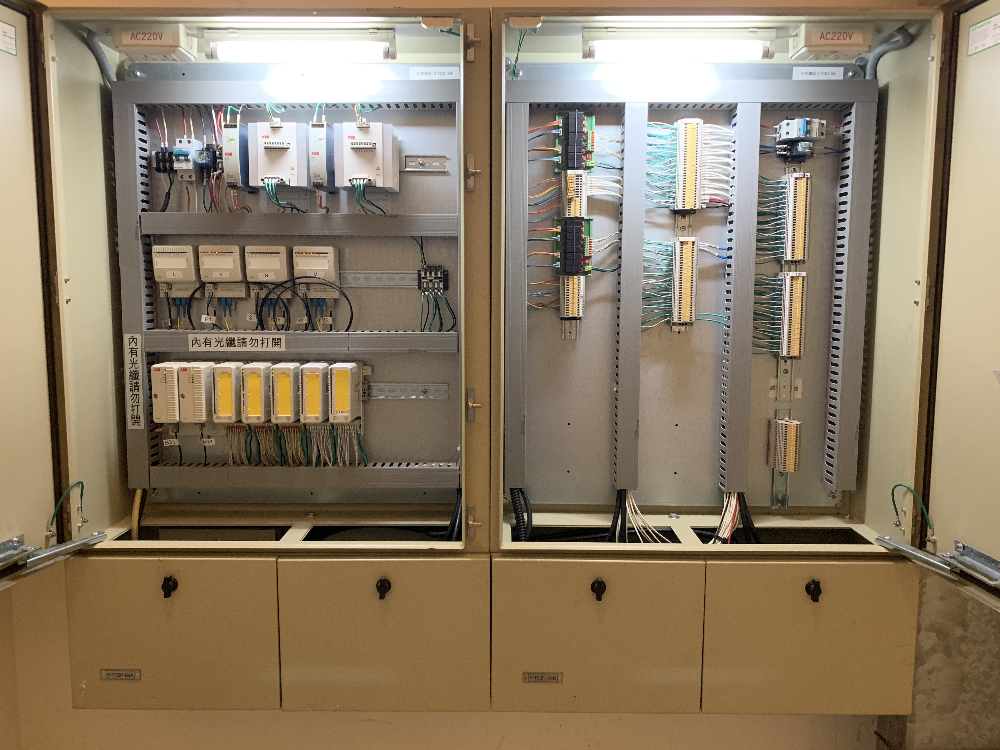
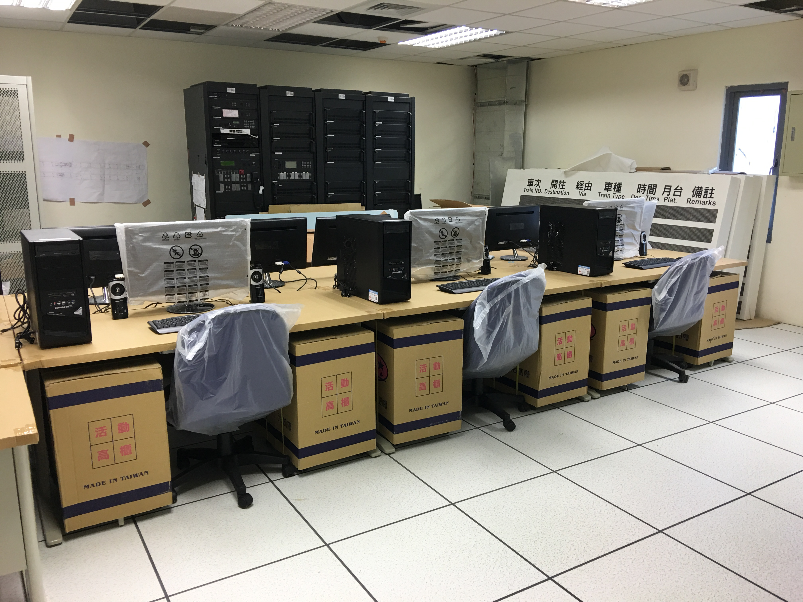
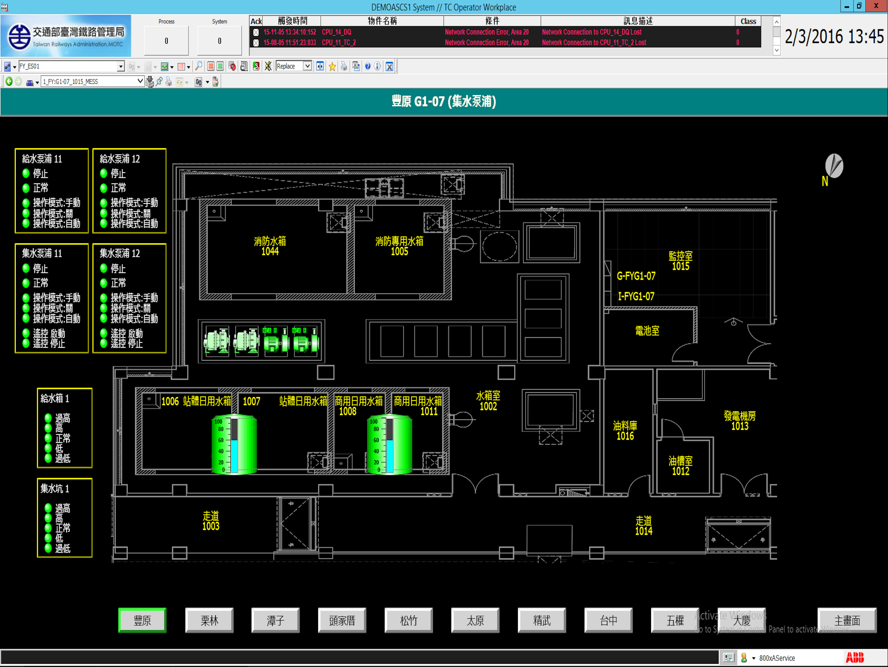
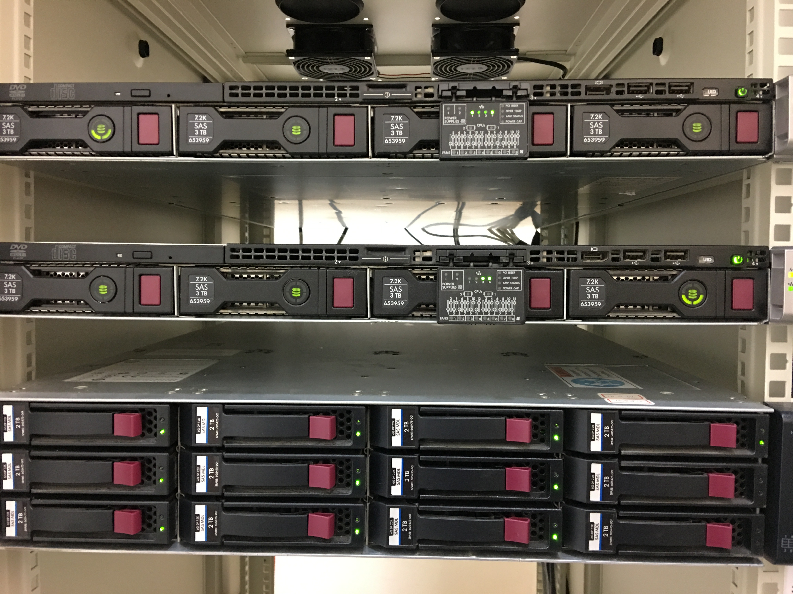
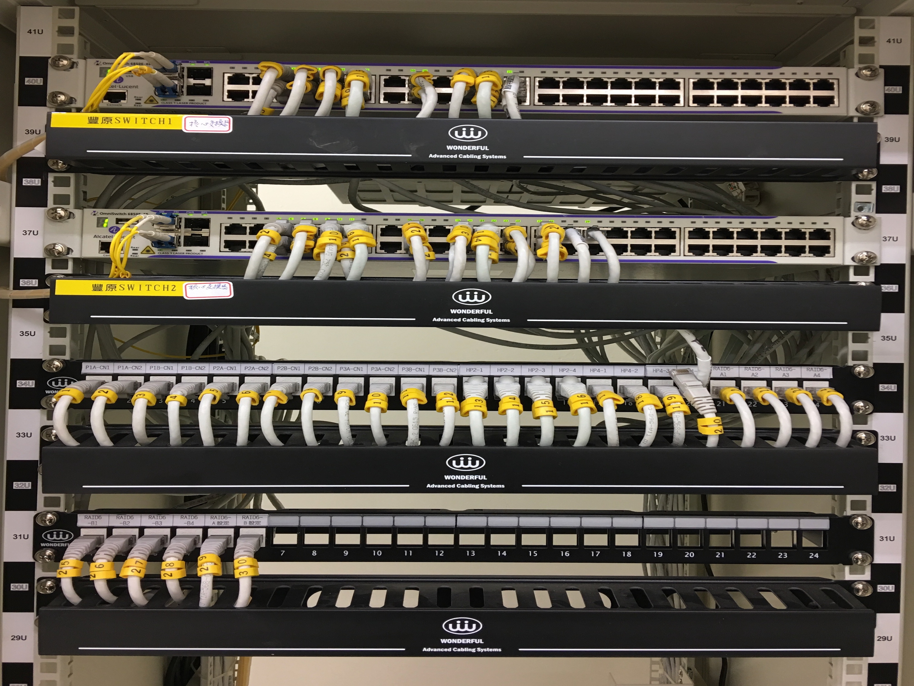

<!DOCTYPE html><!--觸發所有瀏覽器使用標準模式-->
<html lang="zh-Hant-TW"><!--網頁的語系宣告：中文-->

<!--start head-->
<head>

  <meta charset="utf-8">
  <!--將網頁文件宣告為 UTF-8 編碼-->
  <title>利達 LTC | 中央監控</title>
  <!--網頁標頭-->
  <meta http-equiv="X-UA-Compatible" content="IE=Edge">
  <!--網頁 IE 兼容模式-->
  <meta name="viewport" content="width=device-width, initial-scale=1">
  <!--網頁 RWD 宣告-->
  <meta name="keywords" content="">
  <!--網頁關鍵字標籤-->
  <meta name="description" content="利達由通信產品製造與工程服務，導入資訊、廣播、門禁、監視，並整合自動化監控，提供完整的弱電系統服務。">
  <!--顯示在搜尋結果中的網頁摘要-->
  <link rel="Shortcut Icon" type="image/x-icon" href="../assets/logo/favicon.ico" />
  <!--網頁圖標-->

  <!--此網頁範例來源
	Workforce CSS Template
	https://templatemo.com/tm-461-workforce
  -->

  <link href='http://fonts.googleapis.com/css?family=Montserrat:400,700' rel='stylesheet' type='text/css'><!--外部字體超連結-->


  <!-- CSS only -->
  <link rel="stylesheet" href="../assets/css/font-awesome.min.css">
  <link rel="stylesheet" href="../assets/css/normalize.min.css">
  <link rel="stylesheet" href="../assets/vendor/bootstrap440/bootstrap.min.css">
  <!--end css-->

  <link rel="stylesheet" href="../assets/css/custom-style.css">
  <!--完整 CSS-->

  <link rel="stylesheet" href="../assets/css/owl.css">
  <!--Owl CSS-->

</head>
<!--end head-->

<!--start body-->
<body id="csrc" data-spy="scroll" data-offset="50" data-target=".navbar-collapse">

  <!--REF: https://stackoverflow.com/questions/31641352/how-to-slide-nav-bar-from-left-instead-from-top/55260765#55260765 -->
  <!--REF: http://dic.vbird.tw/webdesign/main2017/unit11.php -->
  <nav class="navbar navbar-expand-md navbarlight fixed-top">
    <!-- 導覽列開始 -->
    <div class="container">
      <a class="navbar-brand" href="">LTC</a> <!-- Logo 放置處 -->

      <!-- 當畫面縮小時，摺疊起來的按鈕圖示 -->
      <button class="navbar-toggler" type="button" data-toggle="collapse" data-target="#navbarCollapse" aria-controls="navbarCollapse" aria-label="Toggle navigation">
        <span class="close"></span>
        <span class="navbar-toggler-icon"></span>
      </button>

      <!-- 會被摺疊起來的各個超連結 -->
      <div class="collapse navbar-collapse px-5 py-3" id="navbarCollapse">
        <ul class="navbar-nav ml-auto">
          <li class="nav-item active">
            <!-- 個別的導覽列上的按鈕 -->
            <a class="nav-link" href="../index.html">Home</a>
          </li>
          <li class="nav-item dropdown">
            <!-- 下拉式選單 -->
            <a class="nav-link dropdown-toggle" href="#" id="mydrop" data-toggle="dropdown">
              安全監控工程
            </a>
            <div class="dropdown-menu bg-light">
              <!-- 下拉式選單的子選單 -->
              <div class="megamenu"><a class="dropdown-item" href="csrc.html">中央監控</a></div>
              <div class="megamenu"><a class="dropdown-item" href="machineroom.html">機房安全監控</a></div>
              <div class="megamenu"><a class="dropdown-item" href="cmtcms.html">集中監控</a></div>
              <div class="megamenu"><a class="dropdown-item" href="rcaboe.html">製程監控</a></div>
              <div class="megamenu"><a class="dropdown-item" href="customized.html">客製化監控</a></div>
              <div class="megamenu submenu">
                <ul class="dropdown-item">
                  <li><a href="csrc.html#structure" rel="p1">中央監控概述</a></li>
                  <li><a href="csrc.html#allies" rel="p1">系統建置方案</a></li>
                  <li><a href="csrc.html#allies" rel="p1">精選品牌</a></li>
                  <li><a href="csrc.html#testimonials" rel="p1">歷年案例介紹</a></li>
                </ul>
              </div>
              <div class="megamenu submenu">
                <ul class="dropdown-item">
                  <li><a href="machineroom.html#structure" rel="p2">機房安全監控概述</a></li>
                  <li><a href="machineroom.html#allies" rel="p2">系統建置方案</a></li>
                  <li><a href="machineroom.html#allies" rel="p2">精選品牌</a></li>
                  <li><a href="machineroom.html#testimonials" rel="p2">歷年案例介紹</a></li>
                </ul>
              </div>
              <div class="megamenu submenu">
                <ul class="dropdown-item">
                  <li><a href="cmtcms.html#structure" rel="p3">CMT 平交道集中監控</a></li>
                  <li><a href="cmtcms.html#structure" rel="p3">CMS 鐵路號誌集中監控</a></li>
                  <li><a href="cmtcms.html#testimonials" rel="p3">歷年案例介紹</a></li>
                </ul>
              </div>
              <div class="megamenu submenu">
                <ul class="dropdown-item">
                  <li><a href="rcaboe.html#structure" rel="p4">製程監控</a></li>
                  <li><a href="rcaboe.html#structure" rel="p4">BOE 半導體濕蝕刻洗淨</a></li>
                  <li><a href="rcaboe.html#structure" rel="p4">RCA 清洗製程</a></li>
                  <li><a href="rcaboe.html#testimonials" rel="p4">歷年案例介紹</a></li>
                </ul>
              </div>
              <div class="megamenu submenu">
                <ul class="dropdown-item">
                  <li><a href="customized.html#structure" rel="p5">客製化專案</a></li>
                  <li><a href="customized.html#structure" rel="p5">控制配盤</a></li>
                  <li><a href="customized.html#structure" rel="p5">護士呼叫鈴</a></li>
                  <li><a href="customized.html#testimonials" rel="p5">歷年案例介紹</a></li>
                </ul>
              </div>
            </div>
          </li>
          <li class="nav-item dropdown">
            <a class="nav-link dropdown-toggle" href="#" id="mydrop2" data-toggle="dropdown">
              弱電工程服務
            </a>
            <div class="dropdown-menu bg-light">
              <div class="megamenu"><a class="dropdown-item" href="../project/phonesys.html">電話交換機</a></div>
              <div class="megamenu"><a class="dropdown-item" href="../project/cctv.html">監視錄影</a></div>
              <div class="megamenu"><a class="dropdown-item" href="../project/access.html">門禁考勤</a></div>
              <div class="megamenu"><a class="dropdown-item" href="../project/meeting.html">會議廣播</a></div>
              <div class="megamenu"><a class="dropdown-item" href="../project/internet.html">機房與資訊網路</a></div>
              <div class="megamenu submenu">
                <ul class="dropdown-item">
                  <li><a href="../project/phonesys.html#structure" rel="p4">電話交換機概述</a></li>
                  <li><a href="../project/phonesys.html#structure" rel="p4">系統建置方案</a></li>
                  <li><a href="../project/phonesys.html#allies" rel="p4">精選品牌</a></li>
                  <li><a href="../project/phonesys.html#testimonials" rel="p4">歷年案例介紹</a></li>
                </ul>
              </div>
              <div class="megamenu submenu">
                <ul class="dropdown-item">
                  <li><a href="../project/cctv.html#structure" rel="p5">監視錄影概述</a></li>
                  <li><a href="../project/cctv.html#structure" rel="p5">AHD類比高清監視錄影</a></li>
                  <li><a href="../project/cctv.html#structure" rel="p5">網路型監視錄影</a></li>
                  <li><a href="../project/cctv.html#testimonials" rel="p5">歷年案例介紹</a></li>
                </ul>
              </div>
              <div class="megamenu submenu">
                <ul class="dropdown-item">
                  <li><a href="../project/access.html#structure" rel="p6">門禁考勤</a></li>
                  <li><a href="../project/access.html#structure" rel="p6">防盜保全</a></li>
                  <li><a href="../project/access.html#structure" rel="p6">電子巡邏器</a></li>
                  <li><a href="../project/access.html#testimonials" rel="p6">歷年案例介紹</a></li>
                </ul>
              </div>
              <div class="megamenu submenu">
                <ul class="dropdown-item">
                  <li><a href="../project/meeting.html#structure" rel="p7">雲端視訊會議</a></li>
                  <li><a href="../project/meeting.html#structure" rel="p7">會議系統</a></li>
                  <li><a href="../project/meeting.html#structure" rel="p7">廣播系統</a></li>
                  <li><a href="../project/meeting.html#testimonials" rel="p7">歷年案例介紹</a></li>
                </ul>
              </div>
              <div class="megamenu submenu">
                <ul class="dropdown-item">
                  <li><a href="../project/internet.html#structure" rel="p8">機房規劃施工</a></li>
                  <li><a href="../project/internet.html#structure" rel="p8">資訊網路規劃施工</a></li>
                  <li><a href="../project/internet.html#allies" rel="p8">精選品牌</a></li>
                  <li><a href="../project/internet.html#testimonials" rel="p8">歷年案例介紹</a></li>
                </ul>
              </div>
            </div>
          </li>
          <li class="nav-item">
            <a class="nav-link" href="#">關於利達</a>
          </li>
          <li class="nav-item">
            <a class="nav-link" href="#">歷年案例</a>
          </li>
          <li class="nav-item">
            <a class="nav-link" href="#">聯繫我們</a>
          </li>
        </ul>
        <div class="search-button">
          <a href="#" class="search-toggle" data-selector="#navbarCollapse">
            <i class="fa fa-fw fa-search"></i>
            <i class="fa fa-fw fa-times d-none"></i>
          </a>
        </div>
        <form action="" class="search-box">
          <input type="text" class="text search-input" placeholder="搜尋 e-ltc.com.tw" />
        </form>
      </div>
    </div>
  </nav><!-- 導覽列結束 -->
  <!--END REF: https://stackoverflow.com/questions/31641352/how-to-slide-nav-bar-from-left-instead-from-top/55260765#55260765 -->

  <!-- start breadcrumb -->
  <section id="breadcrumb">
    <div class="container">
      <nav class="breadcrumb">
        <a class="breadcrumb-item" href="../index.html">首頁</a>
        <a class="breadcrumb-item" href="#">安全監控工程</a>
        <a class="breadcrumb-item active" href="#">中央監控</a>
      </nav>
    </div>
  </section>
  <!-- end breadcrumb -->

  <!-- start structure -->
  <section class="section-container section-start">
    <div class="container">
      <div class="row">
        <div class="wow bounceIn text-center">
          <h2 class="page-title wow bounceIn">中央監控系統概述</h2>
          <hr>
          <h5 class="text">中央監控係指將多地點之多種監控訊號彙集至指定地點，以達成集中監控管理。</br>
          透過合宜的連結鏈路收容於監控系統，於控制中心使用直覺式圖形化人機介面統一管理，以達預警、連動、省能、安全等效益。
          </h5>
        </div>

        <div align="center">
          
        </div>

      </div>
    </div>
  </section>
  <!--end structure-->

  <!--start proposition-->
  <section class="section-container section-middle">
    <div class="container">
      <div class="row">
        <div class="wow bounceIn text-center">
          <h2 class="page-title wow bounceIn">系統建置方案</h2>
          <hr>
          <h5 class="text">從設計到安裝，再從測試到保固，我們提供以下服務：
          </h5>
        </div>
        <div align="center">
          
          
        </div>
      </div>
    </div>
  </section>
  <!-- end proposition-->

  <!-- Testimonials Starts Here -->
  <section class="section-container section-middle" id="cases">
    <!--start 歷年案例抬頭-->
    <div class="container">
      <div class="row">
        <div class="wow bounceIn text-center">
          <h2 class="page-title wow bounceIn">歷年案例</h2>
          <hr>
          <h5>由利達所完成的案例與實績
          </h5>
        </div>
      </div>
    </div>
    <!--end 歷年案例抬頭-->

    <div class="container">
      <div class="row">
        <div class="col-md-10 offset-md-1">
          <div class="owl-testimonials owl-carousel">
            <!-- start Testimonial 1 -->
            <div class="testimonial-item">
              
              <!--顧客 logo-->
              <h4>交通部鐵道局 台中鐵路高架化計畫</h4>
              <p>"第一階段大慶到豐原共五個既有車站，第二階段為五權到栗林共五個新增通勤車站，總監控點 3,656 點，共長 21,7 公里"</p>
              <div class="link">
                <p>
                  <a href="../assets/pdf/case/automation_tc_csrc.pdf" target="_blank">"Case Study"</a>
                </p>
              </div>
              <span>2012 - 2018年｜車站中央監控系統新建案</span>
            </div>
          </div>
        </div>
      </div>
    </div>
  </section>
  <!-- Testimonials Ends Here -->

  <!-- Portfolio Starts Here -->
  <section class="section-container section-end" id="portfolio">
    <div class="container">
      <div class="row">
        <div class="col-md-12">
          <div class="wow bounceIn text-center">
            <h2 class="page-title wow bounceIn">案例照片</h2>
            <hr>
          </div>

          <div class="iso-section wow fadeIn" data-wow-delay="0.6s">

            <ul class="filter-wrapper clearfix">
              <li><a href="javascript:void();" class="selected opc-main-bg" data-filter="*">台中車站中央監控</a></li>
              <li><a href="javascript:void();" class="opc-main-bg" data-filter=".server">伺服器</a></li>
              <li><a href="javascript:void();" class="opc-main-bg" data-filter=".switchhub">交換器</a></li>
              <li><a href="javascript:void();" class="opc-main-bg" data-filter=".box">控制箱體</a></li>
              <li><a href="javascript:void();" class="opc-main-bg" data-filter=".soft">圖控軟體</a></li>
              <li><a href="javascript:void();" class="opc-main-bg" data-filter=".local">現場</a></li>
            </ul>

            <div class="iso-box-section">
              <div class="iso-box-wrapper col4-iso-box">

                <!--start 精選案例-->
                <div class="iso-box box col-md-3 col-sm-6 col-xs-6">
                  <div class="portfolio-thumb">
                    <!--作品集照片-->
                    <div class="portfolio-overlay">
                      <div class="portfolio-description">
                        <p>控制箱體</p>
                      </div>
                    </div>
                  </div>
                </div>
                <!--end 精選案例-->

                <!--start 精選案例-->
                <div class="iso-box local col-md-3 col-sm-6 col-xs-6">
                  <div class="portfolio-thumb">
                    
                    <div class="portfolio-overlay">
                      <div class="portfolio-description">
                        <p>台中中央監控中心</p>
                      </div>
                    </div>
                  </div>
                </div>
                <!--end 精選案例-->

                <!--start 精選案例-->
                <div class="iso-box soft col-md-3 col-sm-6 col-xs-6">
                  <div class="portfolio-thumb">
                    
                    <div class="portfolio-overlay">
                      <div class="portfolio-description">
                        <p>圖控軟體</p>
                      </div>
                    </div>
                  </div>
                </div>
                <!--end 精選案例-->

                <!--start 精選案例-->
                <div class="iso-box soft col-md-3 col-sm-6 col-xs-6">
                  <div class="portfolio-thumb">
                    
                    <div class="portfolio-overlay">
                      <div class="portfolio-description">
                        <p>圖控軟體</p>
                      </div>
                    </div>
                  </div>
                </div>
                <!--end 精選案例-->

                <!--start 精選案例-->
                <div class="iso-box server col-md-3 col-sm-6 col-xs-6">
                  <div class="portfolio-thumb">
                    <!--精選案例1圖片-->
                    <div class="portfolio-overlay">
                      <div class="portfolio-description">
                        <p>Server 伺服器</p><!--案例內容-->
                      </div>
                    </div>
                  </div>
                </div>
                <!--end 精選案例-->

                <!--start 精選案例-->
                <div class="iso-box switchhub col-md-3 col-sm-6 col-xs-6">
                  <div class="portfolio-thumb">
                    
                    <div class="portfolio-overlay">
                      <div class="portfolio-description">
                        <p>Switch Hub 網路交換器</p>
                      </div>
                    </div>
                  </div>
                </div>
                <!--end 精選案例-->

              </div>
            </div>
          </div>
        </div>
      </div>
    </div>
  </section>
  <!-- Portfolio Ends Here -->

  <!--start footer 註腳-->
  <footer>
    <!--start 容器-->
    <div class="container">
      <!--start sitemap 網站地圖-->
      <div class="footer-sitemap">
        <div class="row">

            <div class="col-sm-4">
				      <ul>
					      <li><a href="../index.html#home" style="color:#E7E7E7" class="smoothScroll">首頁</a></li>
					      <li><a href="../index.html#intro" class="smoothScroll">關於利達</a></li>
					      <li><a href="../index.html#portfolio" class="smoothScroll">歷年案例</a></li>
					      <li><a href="../index.html#contact" class="smoothScroll">聯繫我們</a></li>
				      </ul>
			     </div>

			     <div class="col-sm-4">
				     <ul>
					     <li><a href="../index.html#autoservice" style="color:#E7E7E7" class="smoothScroll">安全監控工程</a></li>
					     <li><a href="csrc.html" class="smoothScroll">中央監控</a></li>
					     <li><a href="machineroom.html" class="smoothScroll">機房安全監控</a></li>
               <li><a href="cmtcms.html" class="smoothScroll">集中監控</a></li>
               <li><a href="rcaboe.html" class="smoothScroll">製程監控</a></li>
               <li><a href="customized.html" class="smoothScroll">客製化監控</a></li>
				     </ul>
			     </div>

			     <div class="col-sm-4">
				     <ul>
					     <li><a href="../index.html#service" style="color:#E7E7E7" class="smoothScroll">弱電工程服務</a></li>
					     <li><a href="../project/phonesys.html" class="smoothScroll">電話交換機</a></li>
					     <li><a href="../project/cctv.html" class="smoothScroll">監視錄影</a></li>
					     <li><a href="../project/access.html" class="smoothScroll">門禁考勤</a></li>
					     <li><a href="../project/meeting.html" class="smoothScroll">會議廣播</a></li>
					     <li><a href="../project/internet.html" class="smoothScroll">機房與資訊網路</a></li>
				     </ul>
			     </div>

		     </div>
         <hr>
         <!--footer 分割線-->
	     </div>
	     <!--end sitemap 網站地圖-->

       <!--start 版權宣告-->
	     <div class="row">
         <div class="col-md-12">
           <p class="wow bounceIn">
             <!--wow bounceIn：使下列文字跳動-->
			       Copyright &copy; 2020 <a href="http://www.e-ltc.com.tw/"><span>LTC</span></a>
             <!--公司網址-->
			       telecommunications . Design:<a rel="nofollow noopener" href="https://templatemo.com"><span>templatemo</span></a>
             <!--網站設計來源-->
		       </p>
         </div>
       </div>
	     <!--end 版權宣告-->
    </div>
    <!--end 容器-->
  </footer>
  <!--end footer 註腳-->

  <!-- GOTOP_記得要把按鈕放到網頁上, 否則它不會出現 -->
  <a href="#" class="gotop">
    <i class="fa fa-chevron-up"></i>
  </a>

  <script src="../assets/js/jquery.min.js"></script>
  <!--JQUERY-->

  <!-- JavaScript Bundle with Popper -->
  <script src="../assets/vendor/bootstrap440/bootstrap.bundle.min.js"></script>

  <!--wow.js & Animate.css-->
  <script src="../assets/js/wow.min.js"></script>

  <!-- portfolio效果-->
  <script src="../assets/js/isotope.js"></script>

  <!-- Start Owl Carousel-->
  <script src="../assets/js/custom 2.js"></script><!--客製化-->
  <script src="../assets/js/owl.js"></script><!--owl.js-->
  <script src="../assets/js/accordions.js"></script>
  <!-- End Owl Carousel-->

</body>

</html>
